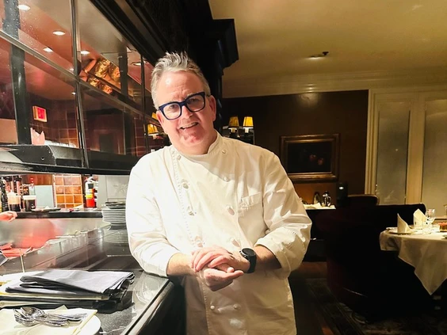
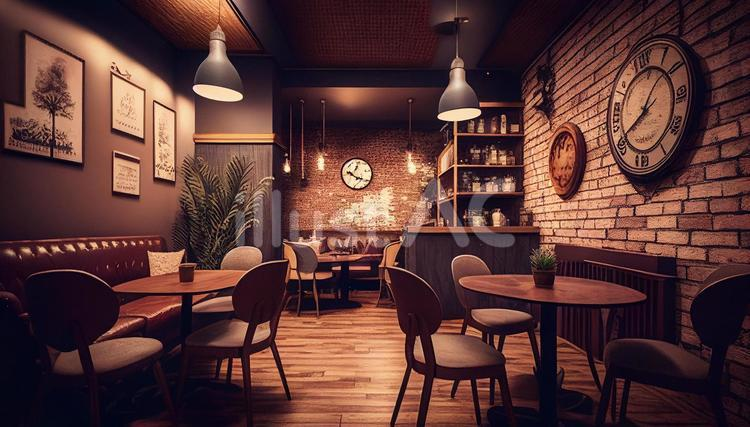

Nestled in the heart of Mangaluru, Brews Cafe stands as a testament to culinary excellence and warm hospitality. Established in 1969 by the visionary Mr. Italiano himself,
Brews Cafe has been a beloved destination for locals and travelers alike.
At Brews Cafe, we pride ourselves not only on our rich heritage but also on our commitment to serving quality cuisine with a dash of innovation. Whether you're craving a
hearty breakfast to start your day, a comforting lunch to recharge, or a decadent dinner to indulge your senses, our menu offers a delightful array of options crafted with
care and passion.
Step into Brews Cafe, and you'll be greeted by a cozy ambiance that invites you to relax and unwind. From the aroma of freshly brewed coffee to the soothing ambiance, every
visit to Brews Cafe promises a memorable experience.
But Brews Cafe is more than just a place to enjoy delicious food; it's a community hub where friends gather, families bond, and memories are made. Our commitment to
exceptional service ensures that every guest leaves with a smile, eager to return for another delightful dining adventure.
Join us at Brews Cafe and embark on a culinary journey that celebrates tradition, flavor, and the joy of good company.
The Chef? Mr. Italiano himself
We are proud of our interiors.
Mon & Tue CLOSED
Wednesday 10:00 - 23:00
Thursday 10:00 - 23:00
Friday 10:00 - 23:00
Saturday 10:00 - 23:00
Sunday Closed